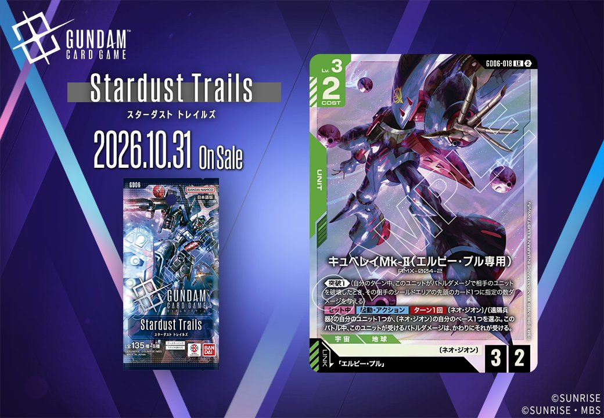
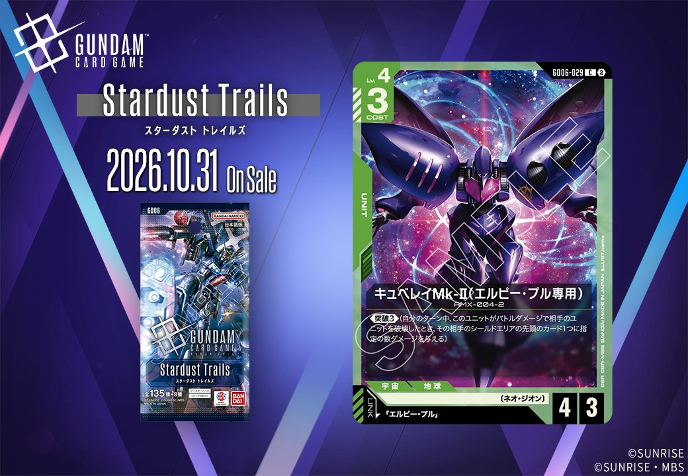
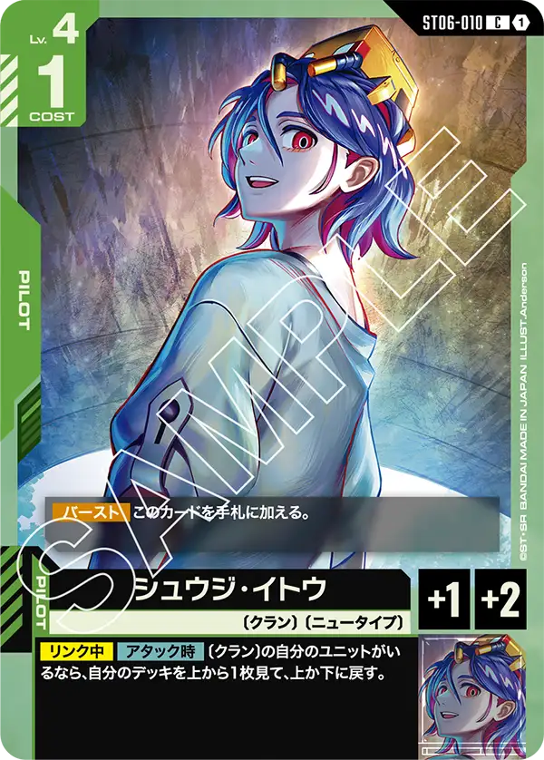
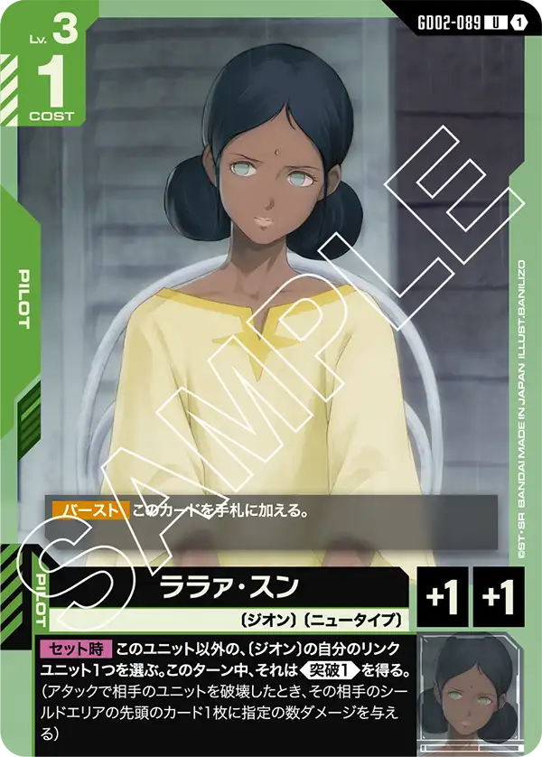
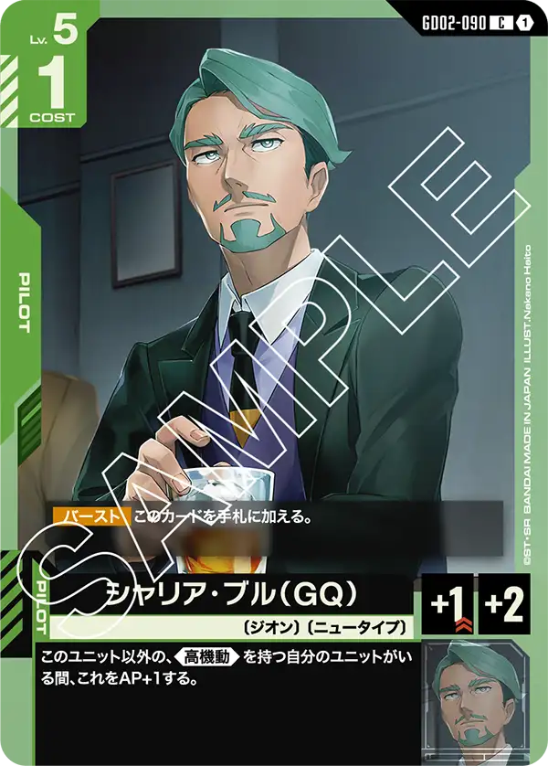

2026年10月31日発売の緑のカード3枚を紹介します。PILOT「エルピー・プル」(GD06-084)とUNIT「キュベレイMk-Ⅱ(エルピー・プル専用)」(GD06-029)はGD06の収録で、UNIT「キュベレイMk-Ⅱ〈エルピー・プル専用〉」(GD06-018)は拡張がStardust Trailsと記載されています。2枚のUNITはいずれも「エルピー・プル」をリンク条件に指定しており、同日公開のUNITとPILOTがリンクで結ばれる組合せです。PILOT「エルピー・プル」1枚で、どちらのUNITのリンク条件も満たせます。

エルピー・プル (GD06-084)
| 色 | 緑 | タイプ | PILOT |
| Lv | 3 | コスト | 1 |
| 補正 AP | 2 | 補正 HP | 0 |
| 特徴 | 〔ネオ・ジオン〕、〔ニュータイプ〕 | ||
効果: 【バースト】このカードを手札に加える。【セット時】このターン中、このユニットは、〔ネオ・ジオン〕/〔遠隔兵器〕の自分のユニットと同じ数だけ《突破1》を得る。(自分のターン中、このユニットがバトルダメージで相手のユニットを破壊したとき、その相手のシールドエリアの先頭のカード1つに指定の数ダメージを与える)
エルピー・プルはLv.3・コスト1のパイロットで、【バースト】で手札に加わります。【セット時】には、〔ネオ・ジオン〕/〔遠隔兵器〕の自分のユニットと同じ数だけ、このユニットがそのターン中《突破1》を得ます。対象のユニットを先に並べてから載せるほど、バトルで相手ユニットを破壊した際にシールドへ与えるダメージが伸びる設計です。同日公開のキュベレイMk-Ⅱ〈エルピー・プル専用〉とはリンクが成立し、ユニット自身も《突破1》を持っています。【セット中】の【起動・アクション】で、受けるバトルダメージを味方ユニットかベースに肩代わりさせられるため、突破を狙うアタックで倒されにくくなる点が噛み合うでしょう。

キュベレイMk-Ⅱ〈エルピー・プル専用〉 (GD06-018)
| 色 | 緑 | タイプ | UNIT |
| Lv | 3 | コスト | 2 |
| AP | 3 | HP | 2 |
| 特徴 | 〔ネオ・ジオン〕 | ||
| リンク条件 | 「エルピー・プル」 | ||
効果: 《突破1》(自分のターン中、このユニットがバトルダメージで相手のユニットを破壊したとき、その相手のシールドエリアの先頭のカード1つに指定の数ダメージを与える。)【セット中】【起動・アクション】ターン1回 〔ネオ・ジオン〕/〔遠隔兵器〕の自分のユニット1つか、〔ネオ・ジオン〕の自分のベース1つを選ぶ。このバトル中、このユニットが受けるバトルダメージは、かわりにそれが受ける。
キュベレイMk-Ⅱ〈エルピー・プル専用〉は、Lv.3・コスト2でAP3/HP2を持ち、最初から《突破1》を備えるユニットです。HP2の打たれ弱さは、パイロットをセットしている間に使える【起動・アクション】で補えます。ターン1回、〔ネオ・ジオン〕/〔遠隔兵器〕の自分のユニットか〔ネオ・ジオン〕のベースを選び、そのバトルでこのユニットが受けるバトルダメージを肩代わりさせられます。リンク先の「エルピー・プル」は、【セット時】に〔ネオ・ジオン〕/〔遠隔兵器〕の自分のユニットと同じ数だけ《突破1》を得る効果です。肩代わり役と同じ特徴のユニットを並べるほど両方の効果が活きるので、構築の方向性がはっきりした1枚と言えるでしょう。

キュベレイMk-Ⅱ(エルピー・プル専用) (GD06-029)
| 色 | 緑 | タイプ | UNIT |
| Lv | 4 | コスト | 3 |
| AP | 4 | HP | 3 |
| 特徴 | 〔ネオ・ジオン〕 | ||
| リンク条件 | 「エルピー・プル」 | ||
効果: 《突破3》(自分のターン中、このユニットがバトルダメージで相手のユニットを破壊したとき、その相手のシールドエリアの先頭のカード1つに指定の数ダメージを与える)
コスト3でAP4/HP3に《突破3》を備えたユニットです。自分のターン中にバトルダメージで相手ユニットを破壊すると、相手のシールドエリアの先頭のカードに3ダメージを与えます。AP4ならHP4以下のユニットを倒せるので、発動条件は満たしやすいでしょう。ただしHP3のため、AP3以上の相手とバトルするとこちらも破壊されます。リンク先の「エルピー・プル」は、【セット時】にそのターン中、〔ネオ・ジオン〕/〔遠隔兵器〕の自分のユニットの数だけ《突破1》を得るパイロットです。このユニット自身が〔ネオ・ジオン〕なので最低1体分は数えられ、同じ特徴のユニットを並べるほど値が増えます。
関連カード
-
 シャア・アズナブル(ST03-011)緑系デッキ内採用率13.4% (1001デッキ)
シャア・アズナブル(ST03-011)緑系デッキ内採用率13.4% (1001デッキ) -
アムロ・レイ(GD05-085)緑系デッキ内採用率9.3% (698デッキ)
-

シュウジ・イトウ(ST06-010)緑系デッキ内採用率0.3% (25デッキ) -

ララァ・スン(GD02-089)緑系デッキ内採用率0% (3デッキ) -

シャリア・ブル（GQ）(GD02-090)緑系デッキ内採用率0% (2デッキ) -
エルピー・プル(GD06-084)NEW緑系 — 同色・共通特徴: ネオ・ジオン（新カード）
-
 ザクⅡ(ST03-008)緑系デッキ内採用率23.5% (1757デッキ)
ザクⅡ(ST03-008)緑系デッキ内採用率23.5% (1757デッキ) -
 リック・ドム(GD01-030)緑系デッキ内採用率22.6% (1692デッキ)
リック・ドム(GD01-030)緑系デッキ内採用率22.6% (1692デッキ) -
 ザクⅡ（シャア・アズナブル機）(ST03-006)緑系デッキ内採用率14.2% (1063デッキ)
ザクⅡ（シャア・アズナブル機）(ST03-006)緑系デッキ内採用率14.2% (1063デッキ) -
キュベレイMk-Ⅱ〈エルピー・プル専用〉(GD06-018)NEW緑系 — 同色・共通特徴: ネオ・ジオン（新カード）